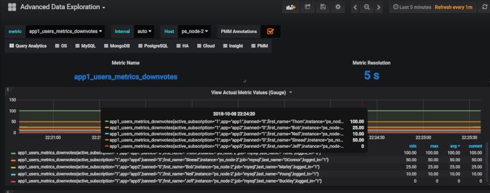

Percona Monitoring and Management 1.15.0
-
Date
October 10, 2018
PMM (Percona Monitoring and Management) is a free and open-source platform for managing and monitoring MySQL and MongoDB performance. You can run PMM in your own environment for maximum security and reliability. It provides thorough time-based analysis for MySQL and MongoDB servers to ensure that your data works as efficiently as possible.
This release offers two new features for both the MySQL Community and Percona Customers:
- MySQL Custom Queries - Turn a
SELECTinto a dashboard!! - Server and Client logs - Collect troubleshooting logs for Percona Support
We addressed 17 new features and improvements, and fixed 17 bugs.
MySQL Custom Queries
In 1.15 we are introducing the ability to take a SQL SELECT statement and turn the result set into metric series in PMM. The queries are executed at the LOW RESOLUTION level, which by default is every 60 seconds. A key advantage is that you can extend PMM to profile metrics unique to your environment (see users table example), or to introduce support for a table that isn’t part of PMM yet. This feature is on by default and only requires that you edit the configuration file and use vaild YAML syntax. The configuration file is in /usr/local/percona/pmm-client/queries-mysqld.yml.
Example - Application users table
We’re going to take a fictional MySQL users table that also tracks the number of upvotes and downvotes, and we’ll convert this into two metric series, with a set of seven labels, where each label can also store a value.
Browsing metrics series using Advanced Data Exploration Dashboard
Lets look at the output so we understand the goal - take data from a MySQL table and store in PMM, then display as a metric series. Using the Advanced Data Exploration Dashboard you can review your metric series. Exploring the metric series app1_users_metrics_downvotes we see the following:

MySQL table
Lets assume you have the following users table that includes true/false, string, and integer types.
SELECT * FROM `users`
+----+------+--------------+-----------+------------+-----------+---------------------+--------+---------+-----------+
| id | app | user_type | last_name | first_name | logged_in | active_subscription | banned | upvotes | downvotes |
+----+------+--------------+-----------+------------+-----------+---------------------+--------+---------+-----------+
| 1 | app2 | unprivileged | Marley | Bob | 1 | 1 | 0 | 100 | 25 |
| 2 | app3 | moderator | Young | Neil | 1 | 1 | 1 | 150 | 10 |
| 3 | app4 | unprivileged | OConnor | Sinead | 1 | 1 | 0 | 25 | 50 |
| 4 | app1 | unprivileged | Yorke | Thom | 0 | 1 | 0 | 100 | 100 |
| 5 | app5 | admin | Buckley | Jeff | 1 | 1 | 0 | 175 | 0 |
+----+------+--------------+-----------+------------+-----------+---------------------+--------+---------+-----------+
Explaining the YAML syntax
We’ll go through a simple example and mention what’s required for each line. The metric series is constructed based on the first line and appends the column name to form metric series. Therefore the number of metric series per table will be the count of columns that are of type GAUGE or COUNTER. This metric series will be called app1_users_metrics_downvotes:
app1_users_metrics: ## leading section of your metric series.
query: "SELECT * FROM app1.users" ## Your query. Don't forget the schema name.
metrics: ## Required line to start the list of metric items
- downvotes: ## Name of the column returned by the query. Will be appended to the metric series.
usage: "COUNTER" ## Column value type. COUNTER will make this a metric series.
description: "Number of upvotes" ## Helpful description of the column.
Full queries-mysqld.yml example
Each column in the SELECT is named in this example, but that isn’t required, you can use a SELECT \* as well. Notice the format of schema.table for the query is included.
---
app1_users_metrics:
query: "SELECT app,first_name,last_name,logged_in,active_subscription,banned,upvotes,downvotes FROM app1.users"
metrics:
- app:
usage: "LABEL"
description: "Name of the Application"
- user_type:
usage: "LABEL"
description: "User's privilege level within the Application"
- first_name:
usage: "LABEL"
description: "User's First Name"
- last_name:
usage: "LABEL"
description: "User's Last Name"
- logged_in:
usage: "LABEL"
description: "User's logged in or out status"
- active_subscription:
usage: "LABEL"
description: "Whether User has an active subscription or not"
- banned:
usage: "LABEL"
description: "Whether user is banned or not"
- upvotes:
usage: "COUNTER"
description: "Count of upvotes the User has earned. Upvotes once granted cannot be revoked, so the number can only increase."
- downvotes:
usage: "GAUGE"
description: "Count of downvotes the User has earned. Downvotes can be revoked so the number can increase as well as decrease."
...
We hope you enjoy this feature, and we welcome your feedback via the Percona forums!
Server and Client logs
We’ve enhanced the volume of data collected from both the Server and Client perspectives. Each service provides a set of files designed to be shared with Percona Support while you work on an issue.
Server
From the Server, we’ve improved the logs.zip service to include:
- Prometheus targets
- Consul nodes, QAN API instances
- Amazon RDS and Aurora instances
- Version
- Server configuration
- Percona Toolkit commands
You retrieve the link from your PMM server using this format:
https://pmmdemo.percona.com/managed/logs.zip
Client
On the Client side we’ve added a new action called summary which fetches logs, network, and Percona Toolkit output in order to share with Percona Support. To initiate a Client side collection, execute:
pmm-admin summary
The output will be a file you can use to attach to your Support ticket. The single file will look something like this:
summary__2018_10_10_16_20_00.tar.gz
New Features and Improvements
- PMM-2913: Provide ability to execute Custom Queries against MySQL - Credit to wrouesnel for the framework of this feature in wrouesnel/postgres_exporter!
- PMM-2904: Improve PMM Server Diagnostics for Support
- PMM-2860: Improve pmm-client Diagnostics for Support
- PMM-1754: Provide functionality to easily select query and copy it to clipboard in QAN
- PMM-1855: Add swap to AMI
- PMM-3013: Rename PXC Overview graph Sequence numbers of transactions to IST Progress
- PMM-2726: Abort data collection in Exporters based on Prometheus Timeout - MySQLd Exporter
- PMM-3003: PostgreSQL Overview Dashboard Tooltip fixes
- PMM-2936: Some improvements for Query Analytics Settings screen
- PMM-3029: PostgreSQL Dashboard Improvements
Fixed Bugs
- PMM-2976: Upgrading to PMM 1.14.x fails if dashboards from Grafana 4.x are present on an installation
- PMM-2969: rds_exporter becomes throttled by CloudWatch API
- PMM-1443: The credentials for a secured server are exposed without explicit request
- PMM-3006: Monitoring over 1000 instances is displayed imperfectly on the label
- PMM-3011: PMM’s default MongoDB DSN is localhost, which is not resolved to IPv4 on modern systems
- PMM-2211: Bad display when using old range in QAN
- PMM-1664: Infinite loading with wrong queryID
- PMM-2715: Since pmm-client-1.9.0, pmm-admin detects CentOS/RHEL 6 installations using linux-upstart as service manager and ignores SysV scripts
- PMM-2839: Tablestats safety precaution does not work for RDS/Aurora instances
- PMM-2845: pmm-admin purge causes client to panic
- PMM-2968: pmm-admin list shows empty data source column for mysql:metrics
- PMM-3043: Total Time percentage is incorrectly shown as a decimal fraction
- PMM-3082: Prometheus Scrape Interval Variance chart doesn’t display data
How to get PMM Server
PMM is available for installation using three methods:
- Docker Hub –
docker pull percona/pmm-server– Documentation - AWS Marketplace – Documentation
- Open Virtualization Format (OVF) – Documentation